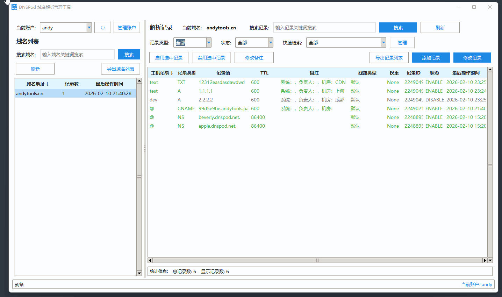

DNSPod 域名解析管理工具
版本：v1.0.0 | 最后更新：2026-02-10

🚀 功能特性
- 多账户管理： 本地加密存储多个 SecretID/Key，一键切换。
- 实时检索： 基于主机名、备注、记录值的全字段模糊匹配。
- 批量运维： 支持勾选多条记录进行一键启用或禁用。
- 导出备份： 支持一键导出当前域名下所有解析记录到 Excel/CSV。
📖 操作说明
1. API 获取： 访问腾讯云控制台获取 API 密钥。
2. 添加账户： 在软件左侧点击“管理账户”，填入 ID 和 Key。
3. 解析管理： 选中域名后，右侧可直接进行增删改查操作。
📝 更新日志
2026-02-10
初始版本发布：支持核心解析功能及多账户管理。